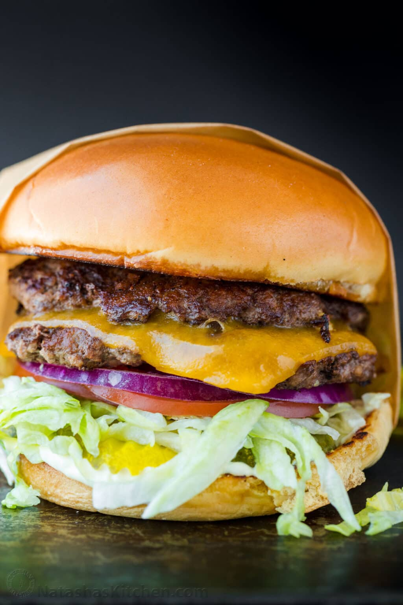

Class Smash Burger

Diner-Style Smash Burger
A homemade Smash Burger is quick and easy to make. These fly off the grill in minutes so it’s a great way to feed a crowd.
Smash burgers have the iconic flavor profile of classic Burgers, but that double burger patty with cheese melted in between is irresistible and you’ll love the special sauce.
Ingredients:
- 6 brioche buns
- 1 head of iceberg lettuce, sliced thinly
- 6 oz sliced dill pickles
- 1 large-sized tomato
- 1 thinly sliced red onion
Steps:
- Prepare Patties – Divide 1 1/2 lbs of ground beef into 8 equal portions (3 oz each), cover, and refrigerate until ready to cook.
- Make Sauce – Stir together 1/3 cup mayo and 1 tsp mustard and set aside.
- Prep Toppings – fully prep your toppings ahead to assemble the burgers right away while the patties are hot and juicy off the grill.
- Toast buns – lightly butter the cut side of your buns and toast on a griddle or skillet over medium heat until golden brown. Transfer to a rack.
- Cook patties – increase to medium-high heat. Depending on your surface area, place 2 to 4 cold pieces of meat onto the hot surface. Working quickly, cover each piece with a sheet of parchment paper and smash each into a thin patty. Remove parchment paper, season with salt, pepper, and garlic powder, add a dab of sauce, and flip. Sear for 2 minutes on the first side and about a minute on the second side.
- Add cheese – place a slice of cheese onto half of the patties and top with a second patty and remove from heat. Serve warm over toasted buns with toppings.